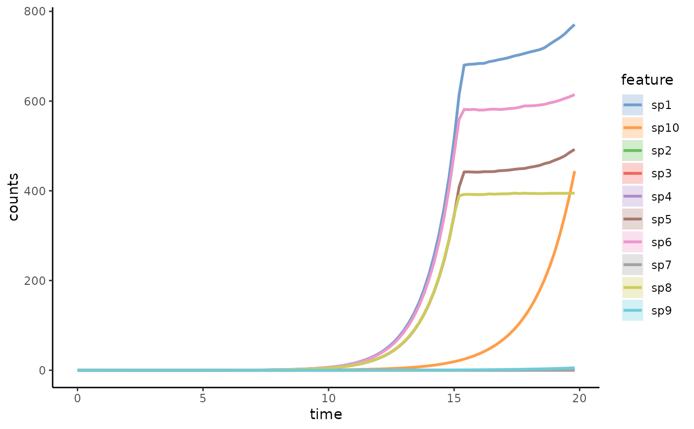
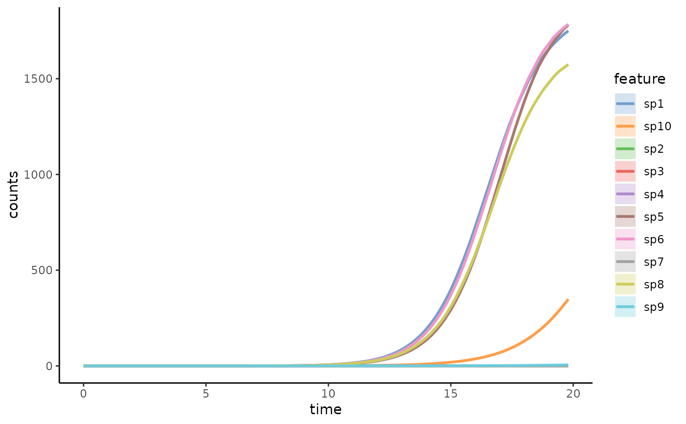

R/utils.R
estimateAFromSimulations.Rdgenerate matrix A from the comparisons between simulations with one absent species and a simulation with complete species (leave-one-out)
estimateAFromSimulations(
simulations,
simulations_compare,
n_instances = 1,
t_end = NULL,
scale_off_diagonal = 0.1,
diagonal = -0.5,
connectance = 0.2
)A list of simulation(s) with complete species
A list of simulation(s), each with one absent species
Integer: number of instances to generate
(default: n_instances = 1)
Numeric: end time of the simulation. If not identical with t_end
in params_list, then it will overwrite t_end in each simulation
(default: t_end = 1000)
Numeric: scale of the off-diagonal elements
compared to the diagonal. Same to the parameter in function randomA.
(default: scale_off_diagonal = 0.1)
Values defining the strength of self-interactions. Input can
be a number (will be applied to all species) or a vector of length n_species.
Positive self-interaction values lead to exponential growth. Same to the
parameter in function randomA.
(default: diagonal = -0.5)
Numeric frequency of inter-species interactions.
i.e. proportion of non-zero off-diagonal terms. Should be in the interval
0 <= connectance <= 1. Same to the parameter in function randomA.
(default: connectance = 0.2)
a matrix A with dimensions (n_species x n_species) where n_species equals to the number of elements in simulations_compare
# example of generateSimulations
crm_params <- list(
n_species = 10,
n_resources = 5,
E = randomE(
n_species = 10, n_resources = 5,
mean_consumption = 1, mean_production = 3
),
x0 = rep(0.001, 10),
resources = rep(1000, 5),
monod_constant = matrix(rbeta(10 * 5, 10, 10), nrow = 10, ncol = 5),
inflow_rate = .5,
outflow_rate = .5,
migration_p = 0,
stochastic = TRUE,
t_start = 0,
t_end = 20,
t_store = 100,
growth_rates = runif(10),
norm = FALSE
)
CRMSimus <- generateSimulations(
model = "simulateConsumerResource",
params_list = crm_params, param_iter = NULL, n_instances = 1, t_end = 20
)
CRMSimus_SE <- TreeSummarizedExperiment(
assays = list(counts = t(CRMSimus[[1]]$matrix[, 1:10])),
colData = DataFrame(time = CRMSimus[[1]]$matrix[, "time"])
)
miaViz::plotSeries(CRMSimus_SE, x = "time")
#> Warning: no non-missing arguments to max; returning -Inf
#> Warning: no non-missing arguments to max; returning -Inf
#> Warning: no non-missing arguments to max; returning -Inf
#> Warning: no non-missing arguments to max; returning -Inf
#> Warning: no non-missing arguments to max; returning -Inf
#> Warning: no non-missing arguments to max; returning -Inf
#> Warning: no non-missing arguments to max; returning -Inf
#> Warning: no non-missing arguments to max; returning -Inf
#> Warning: no non-missing arguments to max; returning -Inf
#> Warning: no non-missing arguments to max; returning -Inf

# get average of all instances
CRMSimusCom <- as.data.frame(do.call(rbind, lapply(CRMSimus, getCommunity)))
CRMSimusMeans <- colMeans(CRMSimusCom)
CRMSimusVariance <- apply(CRMSimusCom, 2, var)
# test leave-one-out in CRM
.replaceByZero <- function(input_list) { # crm_params_iter$x0 as input_list
if (!all(length(input_list) == unlist(unique(lapply(input_list, length))))) {
stop("Length of input_list doesn't match length of element in it.")
}
for (i in seq_along(input_list)) {
input_list[[i]][[i]] <- 0
}
return(input_list)
}
createParamList <- function(input_param, n_repeat, replace_by_zero = FALSE) {
res_list <- vector(mode = "list", length = n_repeat)
for (i in seq_len(n_repeat)) {
res_list[[i]] <- input_param
}
if (replace_by_zero) res_list <- .replaceByZero(res_list)
return(res_list)
}
paramx0 <- createParamList(input_param = rep(0.001, 10), n_repeat = 10, replace_by_zero = TRUE)
paramresources <- createParamList(input_param = rep(1000, 5), n_repeat = 10)
# test overwrite params
crm_params_iter <- list(x0 = paramx0, resources = paramresources)
CRMSimus2 <- generateSimulations(
model = "simulateConsumerResource",
params_list = crm_params, param_iter = crm_params_iter, n_instances = 1, t_end = 20
)
# get average of all instances
CRMSimusCom2 <- as.data.frame(do.call(rbind, lapply(CRMSimus2, getCommunity)))
# get only one average for 1 set of params
n_instances <- 1
CRMSimusCom2simp <- matrix(NA,
nrow = nrow(CRMSimusCom2) / n_instances,
ncol = ncol(CRMSimusCom2)
)
colnames(CRMSimusCom2simp) <- colnames(CRMSimusCom2)
for (i in seq_len(nrow(CRMSimusCom2simp))) {
CRMSimusCom2simp[i, ] <- colMeans(CRMSimusCom2[(i - 1) * n_instances + (1:n_instances), ])
}
# View(CRMSimusCom2simp)
estimatedA <- estimateAFromSimulations(CRMSimus, CRMSimus2,
n_instances = 1,
scale_off_diagonal = 1, diagonal = -0.5, connectance = 0.2
) / 1000
estimatedGLVmodel <- simulateGLV(
n_species = 10, x0 = crm_params$x0,
A = estimatedA, growth_rates = crm_params$growth_rates, t_end = 20, t_store = 100
)
estimatedGLVmodel_SE <- TreeSummarizedExperiment(
assays = list(counts = t(estimatedGLVmodel$matrix[, 1:10])),
colData = DataFrame(time = estimatedGLVmodel$matrix[, "time"])
)
miaViz::plotSeries(estimatedGLVmodel_SE, x = "time")
#> Warning: no non-missing arguments to max; returning -Inf
#> Warning: no non-missing arguments to max; returning -Inf
#> Warning: no non-missing arguments to max; returning -Inf
#> Warning: no non-missing arguments to max; returning -Inf
#> Warning: no non-missing arguments to max; returning -Inf
#> Warning: no non-missing arguments to max; returning -Inf
#> Warning: no non-missing arguments to max; returning -Inf
#> Warning: no non-missing arguments to max; returning -Inf
#> Warning: no non-missing arguments to max; returning -Inf
#> Warning: no non-missing arguments to max; returning -Inf
